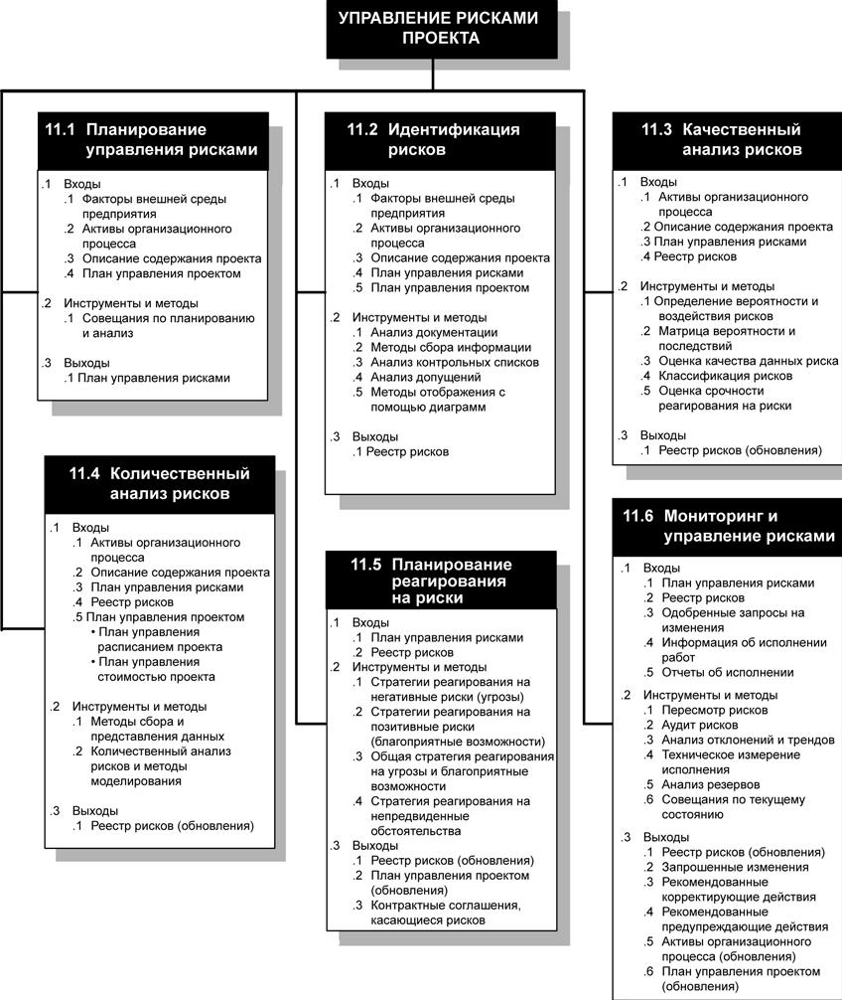
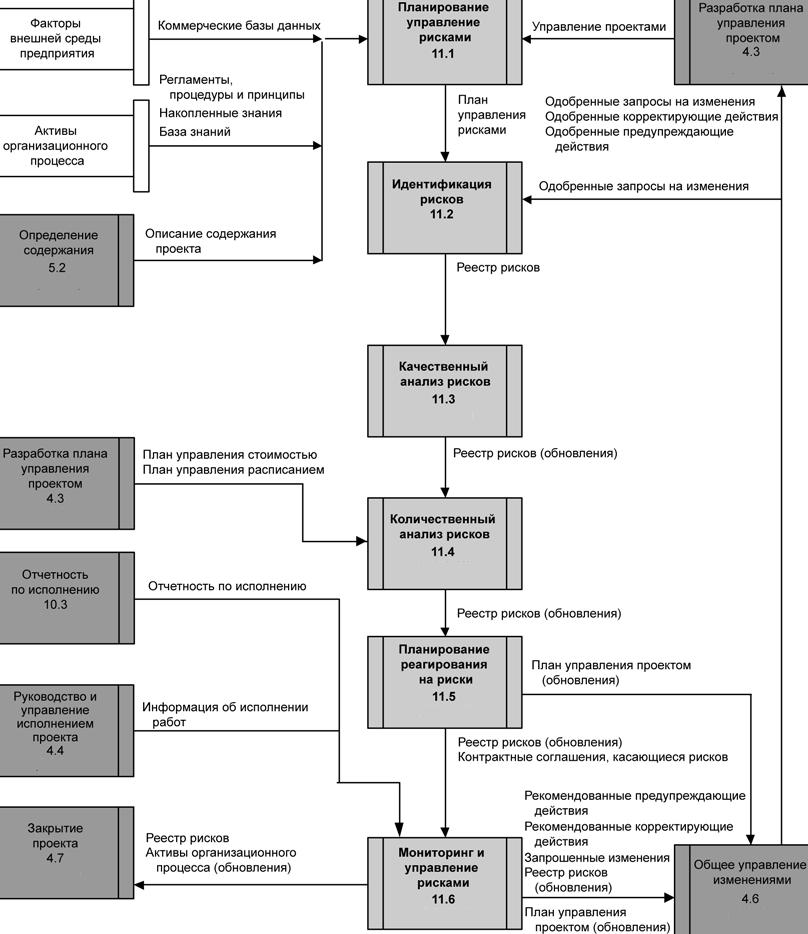

Введение
Управление рисками проекта включает в себя процессы, относящиеся к планированию управления рисками, их идентификации и анализу, реагированию на риски, мониторингу и управления рисками проекта. Большинство из этих процессов подлежат обновлению в ходе проекта.
Цели управления рисками проекта - повышение вероятности возникновения и воздействия благоприятных событий и снижение вероятности возникновения и воздействия неблагоприятных для проекта событий. На рис. 14.1 приведена общая схема процессов управления рисками проекта, а на рис. 14.2 показана диаграмма зависимостей этих процессов и их входы, выходы и другие процессы из данной области знаний.

Рисунок 14.1 - Общая схема процессов управления рисками проекта

Рисунок 14.2 - Диаграмма зависимостей процессов для процесса управления рисками проекта
Процессы управления рисками проекта включают в себя следующее:
11.1 Планирование управления рисками - выбор подхода, планирование и выполнение операций по управлению рисками проекта.
11.2 Идентификация рисков - определение того, какие риски могут повлиять на проект, и документальное оформление их характеристик.
11.3 Качественный анализ рисков - расположение рисков по степени их приоритета для дальнейшего анализа или обработки путем оценки и суммирования вероятности их возникновения и воздействия на проект.
11.4 Количественный анализ рисков - количественный анализ потенциального влияния идентифицированных рисков на общие цели проекта.
11.5 Планирование реагирования на риски - разработка возможных вариантов и действий, способствующих повышению благоприятных возможностей и снижению угроз для достижения целей проекта.
11.6 Мониторинг и управление рисками - отслеживание идентифицированных рисков, мониторинг остаточных рисков, идентификация новых рисков, исполнение планов реагирования на риски и оценка их эффективности на протяжении жизненного цикла проекта.
Риск проекта - это неопределенное событие или условие, которое в случае возникновения имеет позитивное или негативное воздействие по меньшей мере на одну из целей проекта, например сроки, стоимость, содержание или качество (т. е. в зависимости от конкретного проекта: когда цель проекта определена как сдача результатов согласно определенному расписанию или как сдача результатов, не превышающих по стоимости оговоренный бюджет и т. д.).
Риск может быть вызван одной или несколькими причинами и в случае возникновения может оказывать влияние на один или несколько факторов.Например, причиной риска может быть необходимость получения разрешения от местного Комитета по охране окружающей среды или недостаток персонала, привлеченного для разработки проекта. Наступлением риска в этих случаях будет задержка с выдачей разрешения или нехватка персонала, привлеченного для разработки проекта. Возникновение любого из этих точно не известных заранее событий может повлиять на стоимость проекта, его расписание или выполнение. К условиям возникновения риска могут также относиться аспекты внешней среды организации или проекта, способствующие увеличению риска (например, неудачный выбор методов при управлении проектом, отсутствие общих систем управления, одновременное выполнение нескольких проектов или зависимость от внешних участников проекта, которых невозможно контролировать).
Причиной возникновения риска является неопределенность, которая присутствует во всех проектах.
Известные риски - это те риски, которые идентифицированы и подвергнуты анализу. В отношение таких рисков можно спланировать ответные действия с помощью процессов, описанных в данной главе. Но для неизвестных рисков спланировать ответные действия невозможно. В таких случаях разумным решением для команды проекта является выделение общего резерва на непредвиденные обстоятельства, в который будут включены эти неизвестные риски, а также все известные риски, для которых разработка конкретных мер реагирования не представляется экономически эффективной или возможной.
Организации принимают во внимание риски в той степени, в какой они соотносятся с угрозами проекта или с благоприятными возможностями, повышающими вероятность успешного выполнения проекта. Риски, представляющие собой угрозу для проекта, могут приниматься в том случае, если риск соразмерен выгоде, которую можно получить, приняв этот риск.
Например, принятие расписания, составленного с помощью метода "быстрого прохода" (п. 6.5.2.3), которое может быть нарушено, является риском, предпринятым для более раннего окончания проекта. Риски, представляющие собой благоприятные возможности (например, ускорение работ за счет привлечения дополнительного персонала), могут приниматься для наилучшего достижения целей проекта.
Отношение к риску со стороны отдельных людей и - в более крупных масштабах - организаций обусловлено их пониманием риска и ответной реакцией на возникновение риска. Там, где это возможно, отношение к риску должно быть выражено в явной форме. Для каждого проекта должен быть разработан последовательный подход к риску, удовлетворяющий требованиям организации, а информация о риске и управлении им должна быть открытой и достоверной. Реагирование на риски отражают то, как организация понимает баланс между принятием риска и уклонением от риска.
Для достижения успеха на протяжении всего проекта организация должна предпринимать заранее и последовательно предупредительные меры по управлению рисками.